ChaKi.NET lite本体のインストール
ブラウザでGitHubのChaKi.NET liteサイトを開き、ページ右側の"Releases"リンクをクリックします。
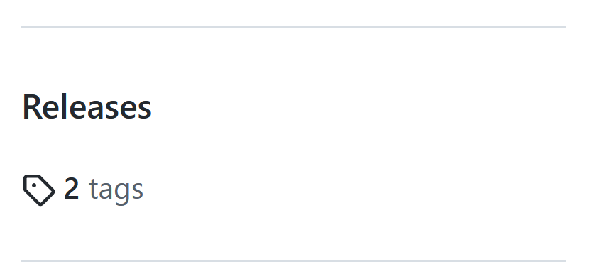
"Releases"タブまたは"Tags"タブに表示される最新のバージョンを選択し、クリックします。（下図は"Releases"タブを選択した状態を示します。）
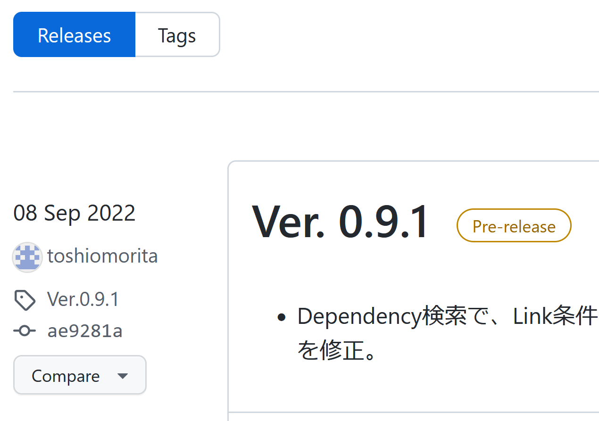
"Assets"グループの下にある"ChaKiNetLiteSetup64.msi"をクリックします。ブラウザによるダウンロードが開始されます。
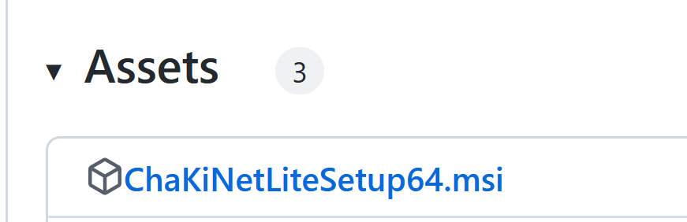
Windows OSによる実行確認ダイアログが表示されるので、"詳細情報"をクリックします。
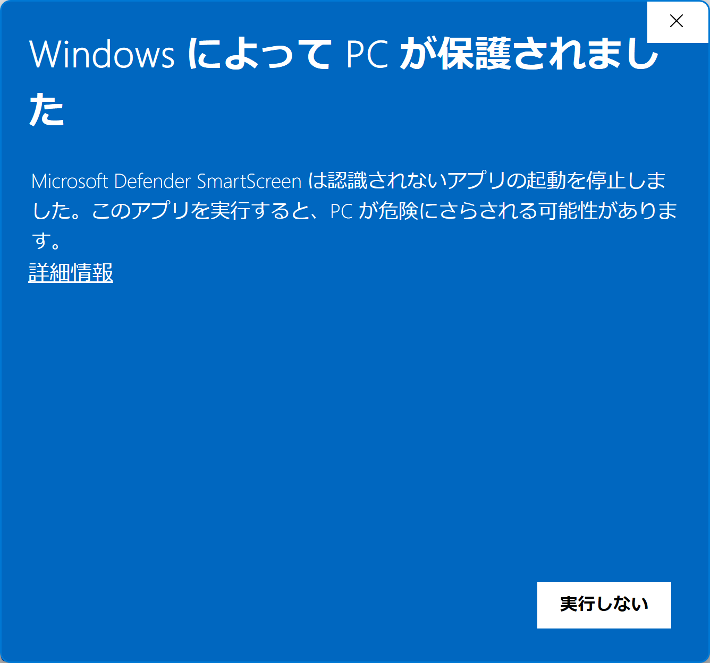
"実行"ボタンをクリックします。
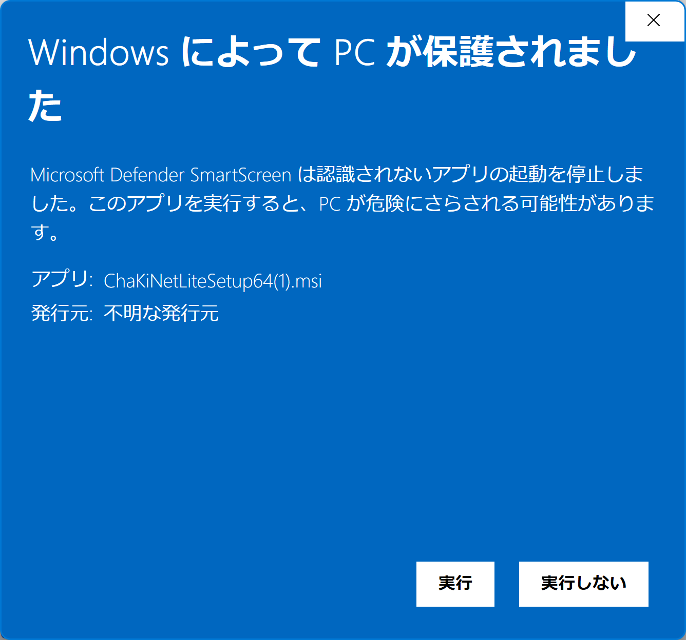
再度OSによるインストール確認ダイアログが表示されるので、"インストールする"ボタンをクリックします。
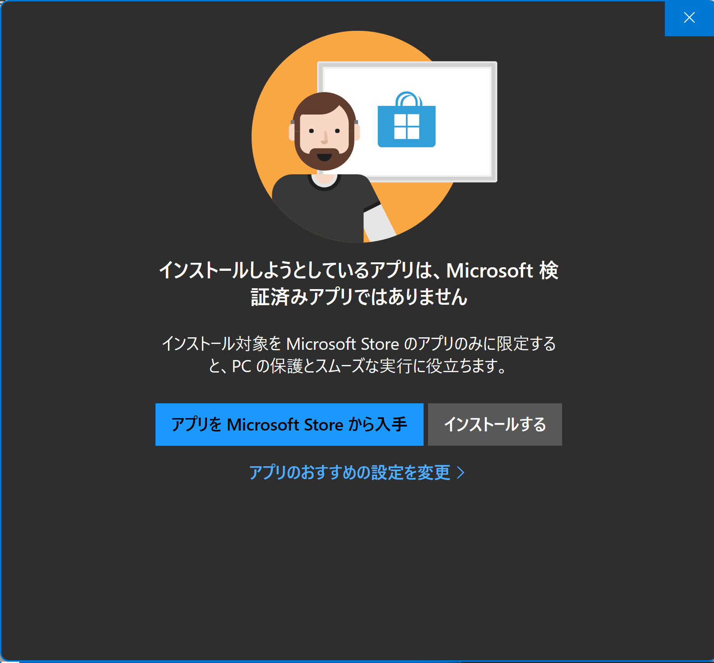
インストーラーが起動し、手順を示すダイアログが表示されます。"次へ"ボタンをクリックします。
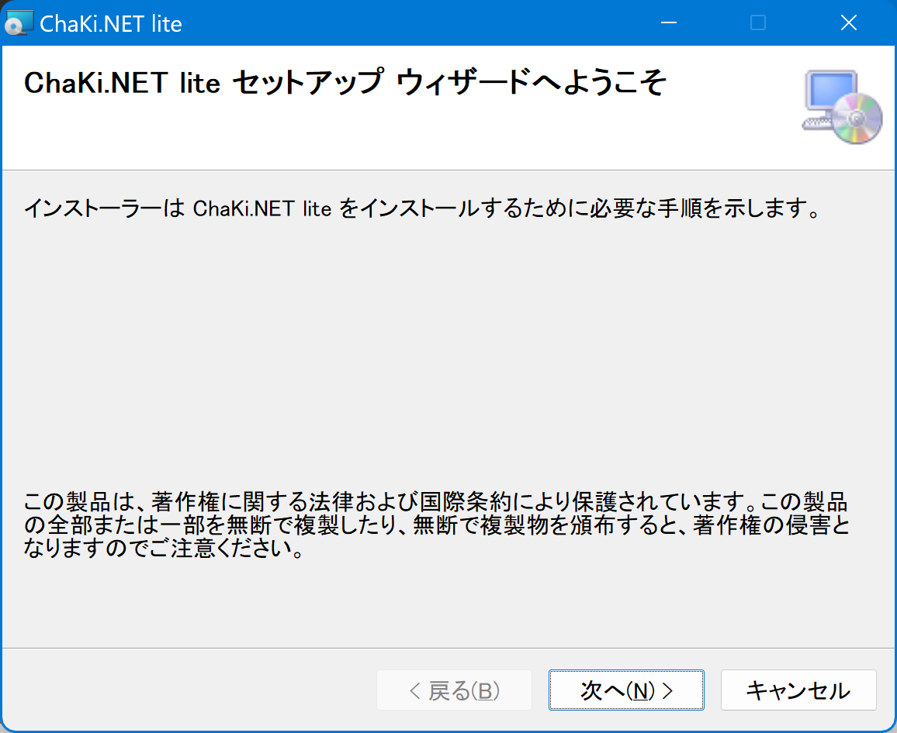
"次へ"ボタンをクリックします。
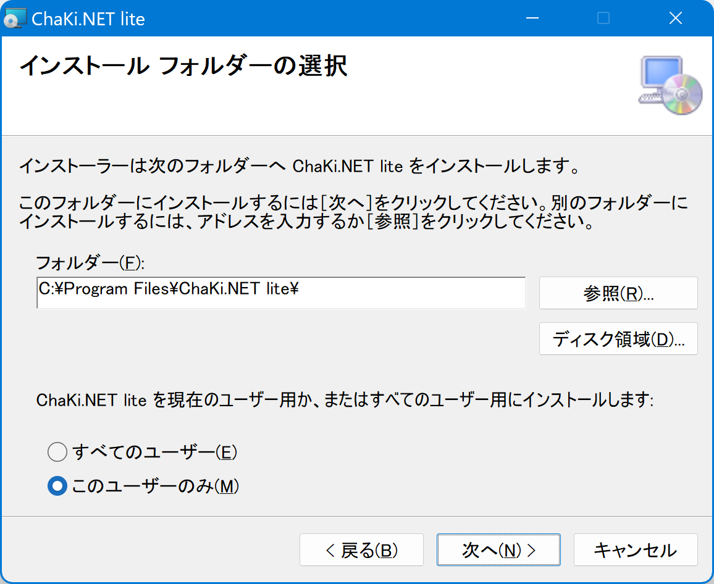
"次へ"ボタンをクリックします。この後、Windows OSによる全画面の確認ダイアログが表示されることがありますが、"許可する/はい"をクリックします。
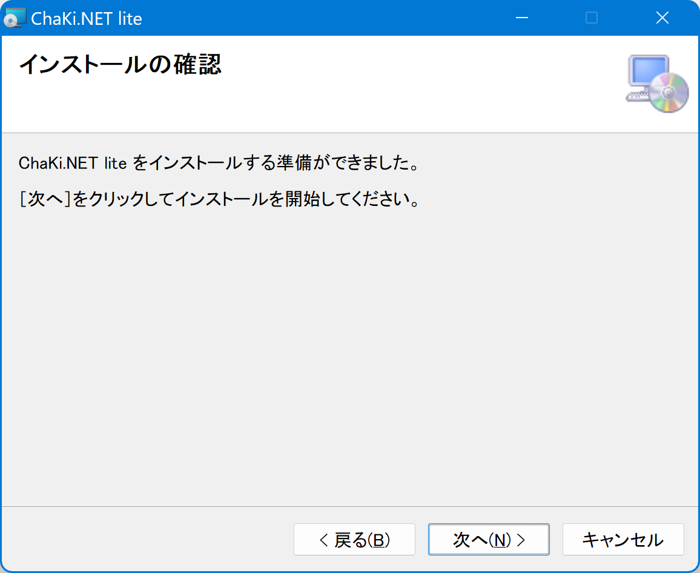
インストールが終わると下記の終了メッセージが表示されますので、"閉じる"ボタンをクリックします。
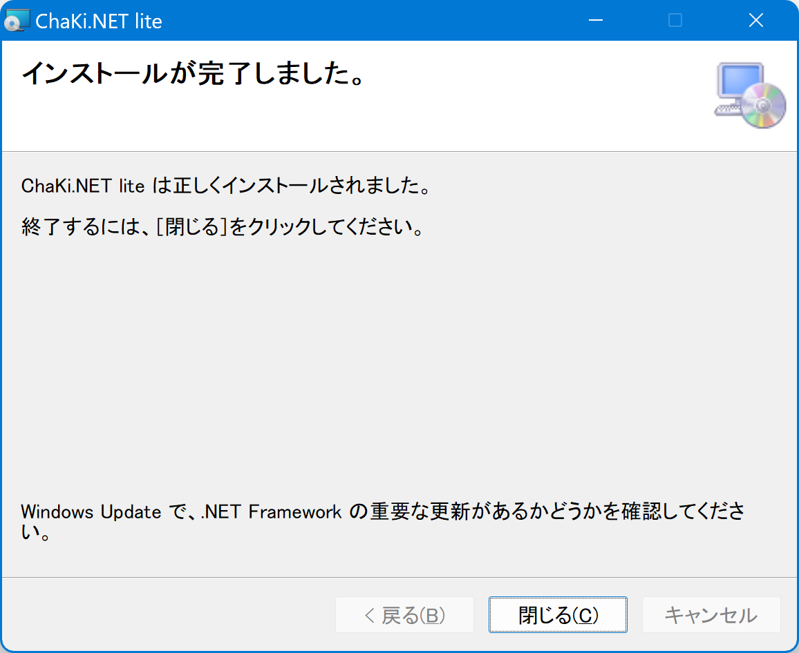
インストールに成功していれば、デスクトップおよびWindowsスタートメニューのアプリ一覧に下図のChaKi.NETliteのアイコンが追加されています。アイコンまたはメニューをクリック（ダブルクリック）することでChaKi.NET liteアプリケーションを起動することができます。
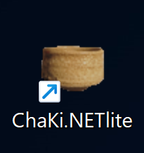
（注）「既に同じアプリケーションがインストールされています」というメッセージが出た場合は、Windowsの設定の「アプリ>インストールされているアプリ」またはコントロールパネルの「アプリの追加と削除」からChaKi.NET liteをアンインストールし、再インストールを行ってください。